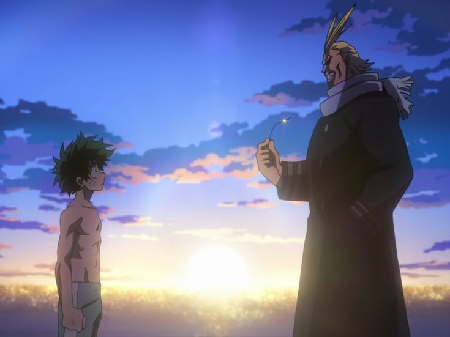
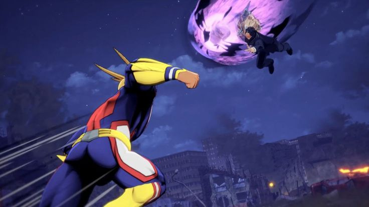
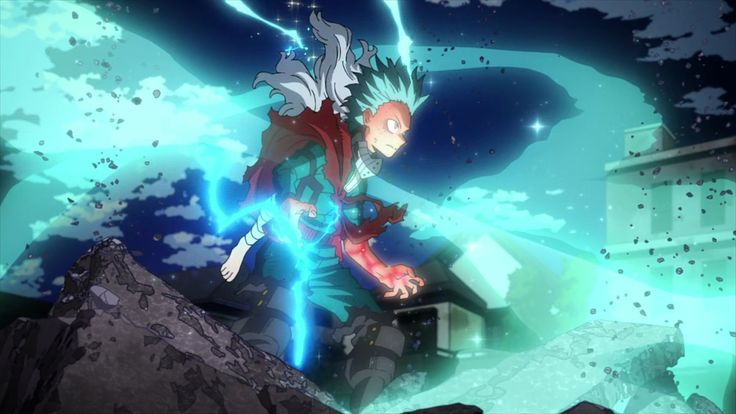
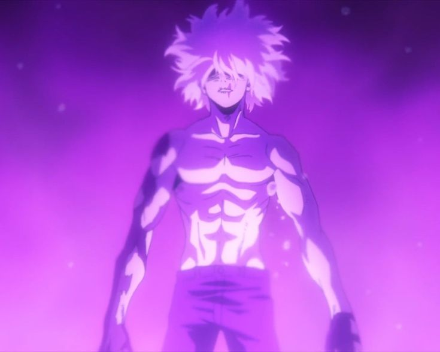

Sucesos de My Hero Academia
Descubre los sucesos imprescindibles de la historia de My Hero Academia.
Temporada 1
Deku conoce a All Might y recibe el One For All, comenzando su camino como héroe.
Temporada 2

Durante el Festival Deportivo, Deku y Todoroki protagonizan una de las batallas más icónicas.
Temporada 3
All Might se enfrenta a All For One en su última batalla y se retira como héroe número uno.
Temporada 4
Deku usa el 100% del One For All por primera vez para salvar a Eri y derrotar a Overhaul.
Temporada 5
La Liga de Villanos se fortalece y Shigaraki comienza su transformación como gran amenaza.
Temporada 6
Estalla la Guerra de Héroes: Shigaraki despierta con múltiples quirks y la sociedad se tambalea.
Temporada 7
Deku y sus compañeros se preparan para la batalla final contra All For One y Shigaraki.